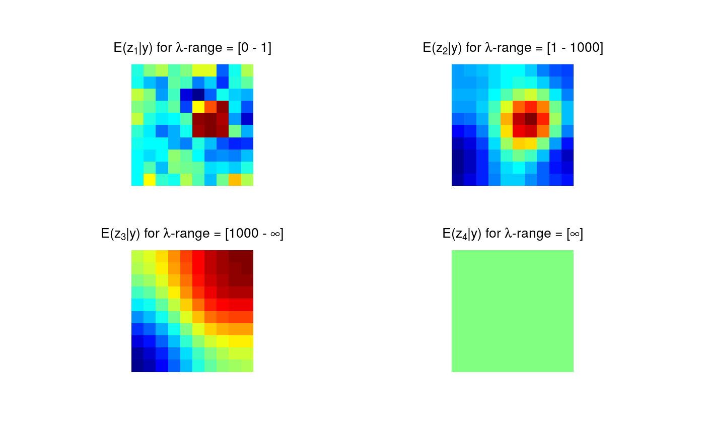

mrbsizeR contains a method for the scale space multiresolution analysis of
spatial fields and images to capture scale-dependent features. The name is
an abbreviation for MultiResolution Bayesian SIgnificant
ZEro crossings of derivatives in R and the method combines the
concept of statistical scale space analysis with a Bayesian SiZer method.
The mrbsizeR analysis can be applied to data on a regular grid and to spherical
data. For data on a grid, the scale space multiresolution analysis has three steps:
Bayesian signal reconstruction.
Using differences of smooths, scale-dependent features of the reconstructed signal are found.
Posterior credibility analysis of the differences of smooths created.
In a first step, Bayesian signal reconstruction is used to extract an underlying signal from a potentially noisy observation. Samples of the resulting posterior can be generated and used for the analysis. For finding features on different scales, differences of smooths at neighboring scales are used. This is an important distinction to other scale space methods (which usually use a wide range of smoothing levels without taking differences) and tries to separate the features into distinct scale categories more aggressively. After a successful extraction of the scale-different features, posterior credibility analysis is necessary to assess whether the features found are ``really there'' or if they are artifacts of random sampling.
For spherical data, no Bayesian signal reconstruction is implemented in mrbsizer.
Data samples therefore need to be available beforehand. The analysis procedure
can therefore be summarized in two steps:
Using differences of smooths, scale-dependent features of the reconstructed signal are found.
Posterior credibility analysis of the differences of smooths created.
This method has first been proposed by Holmstrom, Pasanen, Furrer, Sain (2011),
see also
http://cc.oulu.fi/~lpasanen/MRBSiZer/.
Major Functions
TaperingPlot Graphical estimation of useful smoothing
levels. Can be used signal-independent and signal-dependent.
MinLambda Numerical estimation of useful smoothing levels.
Takes the underlying signal into account. plot.minLambda can
be used for plotting the result.
rmvtDCT Creates samples on a regular grid from a
multivariate \(t_{\nu}\)-distribution using a discrete cosine transform (DCT).
mrbsizeRgrid Interface of the mrbsizeR method for data on a
regular grid. Differences of smooths at neighboring scales are created
and posterior credibility analysis is conducted. The results can be
visualized using plot.smMeanGrid,plot.HPWmapGrid
and plot.CImapGrid.
mrbsizeRsphere Interface of the mrbsizeR method for data on a
sphere. Differences of smooths at neighboring scales are created
and posterior credibility analysis is conducted. The results can be
visualized using plot.smMeanSphere,plot.HPWmapSphere
and
plot.CImapSphere.
For data on a sphere, no Bayesian signal reconstruction is implemented.
Samples have to be provided instead.
Getting Started
The vignette for this package offers an extensive overview of the functionality
and the usage of mrbsizeR.
References
Holmstrom, L. and Pasanen, L. (2011). MRBSiZer. http://cc.oulu.fi/~lpasanen/MRBSiZer/. Accessed: 2017-03-04.
Holmstrom, L., Pasanen, L., Furrer, R., and Sain, S. R. (2011). Scale space multiresolution analysis of random signals. Computational Statistics and Data Analysis, 55, 2840-2855. <DOI:10.1016/j.csda.2011.04.011>.
Holmstrom, L. and Pasanen, L. (2016). Statistical scale space methods. International Statistical Review. <DOI:10.1111/insr.12155>.
DISCLAIMER: The author can not guarantee the correctness of any function or program in this package.
# Artificial sample data set.seed(987) sampleData <- matrix(stats::rnorm(100), nrow = 10) sampleData[4:6, 6:8] <- sampleData[4:6, 6:8] + 5 # Generate samples from multivariate t-distribution tSamp <- rmvtDCT(object = sampleData, lambda = 0.2, sigma = 6, nu0 = 15, ns = 1000) # mrbsizeRgrid analysis mrbOut <- mrbsizeRgrid(posteriorFile = tSamp$sample, mm = 10, nn = 10, lambdaSmoother = c(1, 1000), prob = 0.95) # Posterior mean of the differences of smooths plot(x = mrbOut$smMean, turn_out = TRUE)#> Warning: "turn_out" is not a graphical parameter#> Warning: "turn_out" is not a graphical parameter#> Warning: "turn_out" is not a graphical parameter#> Warning: "turn_out" is not a graphical parameter#> Warning: "turn_out" is not a graphical parameter#> Warning: "turn_out" is not a graphical parameter#> Warning: "turn_out" is not a graphical parameter#> Warning: "turn_out" is not a graphical parameter#> Warning: "turn_out" is not a graphical parameter#> Warning: "turn_out" is not a graphical parameter#> Warning: "turn_out" is not a graphical parameter#> Warning: "turn_out" is not a graphical parameter#> Warning: "turn_out" is not a graphical parameter#> Warning: "turn_out" is not a graphical parameter#> Warning: "turn_out" is not a graphical parameter#> Warning: "turn_out" is not a graphical parameter#> Warning: "turn_out" is not a graphical parameter#> Warning: "turn_out" is not a graphical parameter#> Warning: "turn_out" is not a graphical parameter#> Warning: "turn_out" is not a graphical parameter#> Warning: "turn_out" is not a graphical parameter#> Warning: "turn_out" is not a graphical parameter#> Warning: "turn_out" is not a graphical parameter#> Warning: "turn_out" is not a graphical parameter# Credibility analysis using simultaneous credible intervals plot(x = mrbOut$ciout, turn_out = TRUE)#> Warning: "turn_out" is not a graphical parameter#> Warning: "turn_out" is not a graphical parameter#> Warning: "turn_out" is not a graphical parameter#> Warning: "turn_out" is not a graphical parameter#> Warning: "turn_out" is not a graphical parameter#> Warning: "turn_out" is not a graphical parameter#> Warning: "turn_out" is not a graphical parameter#> Warning: "turn_out" is not a graphical parameter#> Warning: "turn_out" is not a graphical parameter#> Warning: "turn_out" is not a graphical parameter#> Warning: "turn_out" is not a graphical parameter#> Warning: "turn_out" is not a graphical parameter#> Warning: "turn_out" is not a graphical parameter#> Warning: "turn_out" is not a graphical parameter#> Warning: "turn_out" is not a graphical parameter#> Warning: "turn_out" is not a graphical parameter#> Warning: "turn_out" is not a graphical parameter#> Warning: "turn_out" is not a graphical parameter#> Warning: "turn_out" is not a graphical parameter#> Warning: "turn_out" is not a graphical parameter#> Warning: "turn_out" is not a graphical parameter#> Warning: "turn_out" is not a graphical parameter#> Warning: "turn_out" is not a graphical parameter#> Warning: "turn_out" is not a graphical parameter